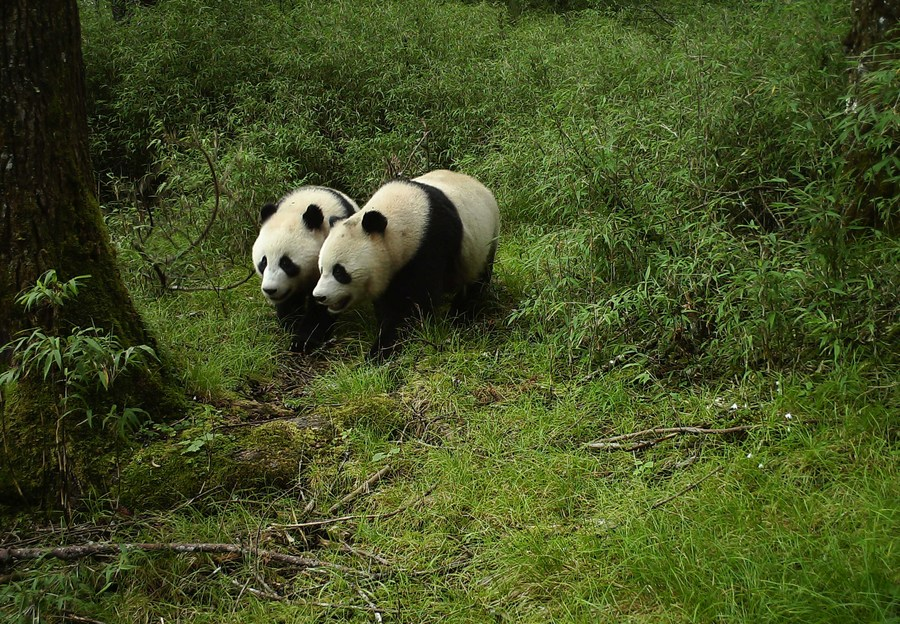
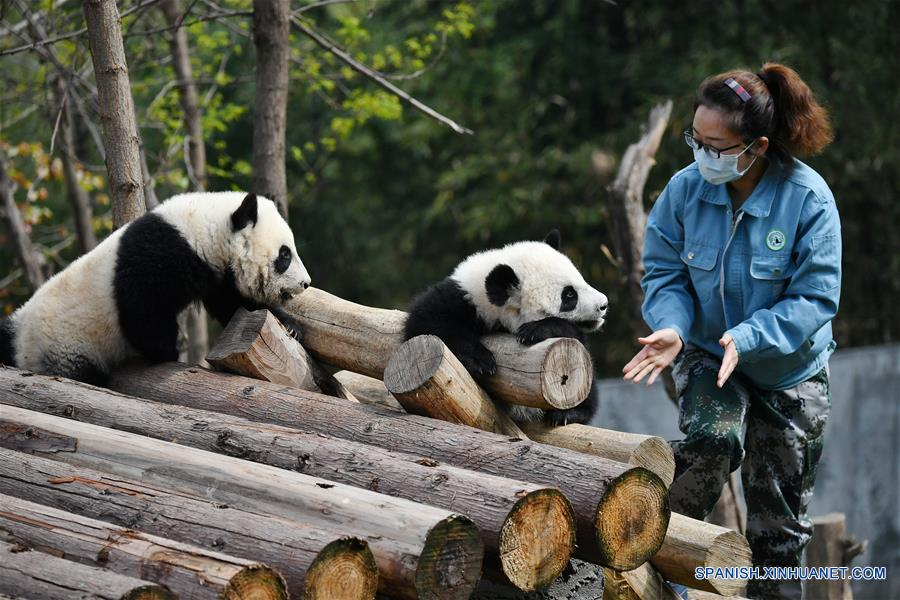

Los pandas gigantes han estado en peligro principalmente por la pérdida de su hábitat natural. La tala de bosques y el crecimiento de las zonas urbanas han reducido las áreas donde crece el bambú, su principal fuente de alimento. Además, su baja tasa de reproducción hace que su recuperación sea lenta.
Proteger a los pandas significa también conservar los bosques donde viven, los cuales benefician a muchas otras especies y ayudan a mantener el equilibrio del ecosistema. Cuidarlos es una responsabilidad compartida que contribuye a preservar la biodiversidad del planeta para las futuras generaciones.

Los pandas ayudan a conservar los bosques de bambú, los cuales son hogar de muchas otras especies y mantienen el equilibrio natural.
La presencia de pandas es señal de un ecosistema saludable, por lo que su protección beneficia a todo el entorno natural.

Cuidar a los pandas es un compromiso para preservar la biodiversidad y fomentar el respeto por la vida silvestre.